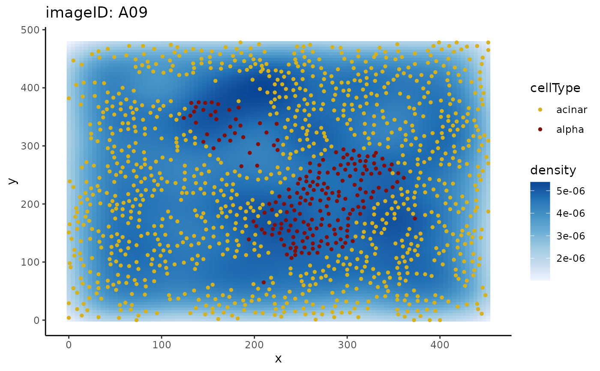

Plots an image with specified from and to cell types.
Usage
plotImage(
cells,
imageToPlot,
from,
to,
imageID = "imageID",
cellType = "cellType",
spatialCoords = c("x", "y")
)Arguments
- cells
A SummarizedExperiment object.
- imageToPlot
The ID of the image to be plotted.
- from
The "from" cell type.
- to
The "to" cell type.
- imageID
The name of the imageID column in the SummarizedExperiment object.
- cellType
The name of the cellType column in the SummarizedExperiment object.
- spatialCoords
The names of the spatialCoords column if using a SingleCellExperiment.
Examples
data("diabetesData")
plotImage(diabetesData, "A09", from = "acinar", to = "alpha")
